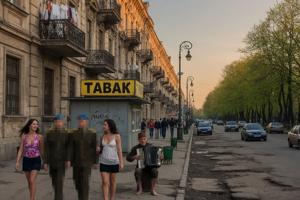
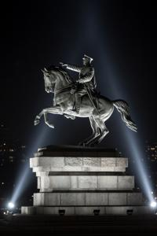
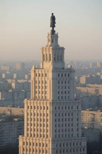
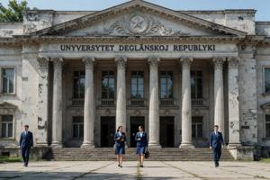
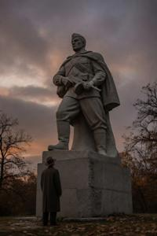
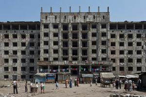
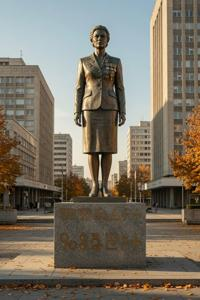

Sixth District of Vronovica
{kind=link}

The Sixth District (Szesty okrug) of Vronovica occupies the eastern half of Sockostur, bounded by Liberation Avenue to the west, Workers' Avenue to the north-west, and South Drava's bank to the north. Unlike older districts of Vronovica, the Sixth was constructed almost entirely from nothing according to a single coherent vision. It was the most deliberate act of urban planning in the PRUP's history and, measured against its stated intentions, probably the least successful.
History overview
Construction of the broader Sockostur complex was announced by Gowbka in 1963. The site selected for the Sixth District was at that time occupied by pre-war workers' housing, allotment gardens, and light industrial sheds, cleared between 1963 and 1966. The first construction phase, completed by 1971, was built in the Stalinist neo-Empire idiom then falling out of fashion elsewhere in the bloc: monumental limestone facades, decorated cornices, ornamental ironwork, double rows of linden trees, and a system of radiating boulevards centred on Victory Square. The second phase, from the late 1960s through the 1980s, shifted to a blend of International style and Brutalism. The result is an uneven architectural mixture: neo-Empire wedding-cake blocks on Victory Square and the main avenue, and transitional modernist mid-rises between raw exposed-concrete Brutalist towers. The avenues were laid out at widths suited to military parades.
In 1966 Gowbka announced that all central government ministries would relocate from the Third District to the Sixth by 1972; the State Planning Committee was among the few offices that actually made the move, while most ministries found reasons to remain in the Third District and quietly stayed there through four successive relocation deadlines.
Residential assignments in the Sixth District were reserved for the second tier of citizens: mid-level CPUP officials, military officers of major to colonel ranks, distinguished scientists and doctors, enterprise directors, prominent cultural workers, and manual workers who had received state recognition. The apartments were substantially better constructed than anything available to ordinary Vronovica citizens: larger spaces, parquet floors, lifts in all buildings above four storeys.
This population, relatively comfortable and politically peripheral, was not strongly attached to any faction in the events of 1990–1995. When street fighting reached this part of Sockostur in 1993, most families left with their movable possessions in an orderly fashion. Deglian families did not return until the situation had resolved itself. Zgurian families did not return. The process of reassigning vacated Zgurian apartments was administered by the Deglian Interior Ministry.
Topography
Communism avenue (Jezda Kommunizma), renamed Liberty avenue (Jezda Slobody) after 1990, is the central axis and direct continuation of Socialism avenue. It is approximately 80 metres wide; the medians are planted with formal gardens maintained under socialism and by nobody since. Eleven large and twenty-four small fountains, fed by a dedicated underground circuit, were shut off in 1991 when the pump maintenance fund was redirected elsewhere. They have not operated since.
Victory Square (Trug Pobjedy) is the symbolic centre of Sockostur situated on the western boundary of the Sixth District — Liberation Avenue, a direct continuation of Independence avenue. The square is approximately 350 metres long and 200 metres wide, sidewalks laid out in dressed granite sett, designed to accommodate the annual International Workers' Day parade, which Gowbka reviewed from a raised tribune on the State Planning Committee building's steps.
{kind=link}

At the centre of the square stands the equestrian statue of Generalissimo Gowbka, a work by Svjetovit Bregovi, unveiled in 1968. The bronze figure, 18 metres tall, rises from a granite plinth 18 metres high — a total of 36 metres, visible above the surrounding roofline from most of the district. The horse rears on its hind legs; Gowbka's right arm extends forward in a gesture described in the official unveiling programme as indicating “the direction of the socialist future.” After 1990, engineering assessments concluded that the plinth's foundations were embedded so deeply into the local geology that demolition would risk destabilizing several adjacent residential blocks. The statue has remained in place and has since become, against all expectation, one of the more visited landmarks in the Deglian zone.
{kind=link}

The State Planning Committee building (Drjezsavny planovy komitet), abbreviated as Plankom, occupies the western side of Victory Square, its principal facade addressing the square across a granite forecourt. Constructed between 1961 and 1967, it is a Stalinist terraced skyscraper of twenty-three storeys faced in limestone and decorated with agricultural and industrial reliefs in the manner of Moscow's Seven Sisters. The central tower is crowned by a four-metre bronze statue of Gowbka. The Plankom building is the tallest in Vronovica after the television transmission tower on the southern heights, and on a clear day the only point in the city visible from its entire territory.
Following the military coup of 1999, the building was occupied by the junta named Secret Control Committee, the anonymous military body that has governed the Deglian Republic since. Ground-floor windows are permanently shuttered. Armoured vehicles constantly guard the service entrance on the building's south side. Taking photographs of the building from close range is strictly prohibited.
{kind=link}

The University of the Deglian Republic (Unyversytet Degljanskoj Republyki), formerly the Institute of Socialist Economy, occupies the southern side of Victory Square in one of the district's Stalinist limestone blocks. Reorganized and renamed in 1996 after most Deglian academic staff and students transferred from the New University into the zone, it is the sole institution of higher education in the Deglian Republic. Instruction is in Deglian; the student body is drawn entirely from the zone.
{kind=link}

The Alley of Heroes (Xodnica vitezej) extends eastward from Victory Square as a formal promenade one kilometre in length, terminating at the entrance gates of the People's Palace grounds. The alley is flanked on both sides by granite statues, eight per side, representing the archetypal figures of socialist heroism: the Industrial Worker, the Soldier, the Partisan, the Collective Farmer, the Scientist, the Pioneer, the Constructor, and the Sportsman. Each stands approximately four metres on a two-metre plinth. Several have sustained damage repaired on the most prominent examples and left on the remainder.
The Memory Square (Trug Pameczi) opens at the midpoint of the Alley of Heroes as a wider paved precinct devoted to commemoration of the Second World War dead. At its centre, an Eternal Fire burns in a shallow stone basin; flanking the alley on both sides are bronze steles engraved with the names of all recorded military and civilian victims. Post-communist additions have extended the scope of commemoration: a Holocaust memorial stele, funded by international organizations, was unveiled in the late 1990s, and a civil war victims stele — listing Deglian casualties only — was added by the Deglian Interior Ministry in 2003. Unlike the surrounding ideological monuments, the Memory Square is genuinely visited and genuinely respected; political cynicism stops, by apparent consensus, at its perimeter. The annual 10 September ceremony, marking the date of the Hungarian invasion, is a large public gathering in the Deglian calendar and the sole occasion on which Zgurian visitors are granted authorized entry into the Sixth District, their safety formally guaranteed by the organizers.
{kind=link}

The People's Palace (Narodny polac), at the eastern end of the Alley of Heroes, was the most ambitious single construction project of the PRUP period. Announced in 1971 and described in a Ministry of Culture statement as “the largest public building in the Balkans and the fullest expression of the socialist people's creative power,” it was planned to house the Legislative Assembly, CPUP Central Committee, the Council of State, the Supreme Court, all central government ministries, a state museum of three hundred thousand square metres, and a concert hall with a capacity of three thousand. The main structure — a symmetrical Brutalist composition approximately 420 metres across its principal facade — was begun in 1971 and substantially complete in shell form by 1988. Interior fitting-out was estimated in planning documents at twelve further years of construction. State subsidies ceased in 1990 and work stopped.
In 1991, the first Roma families moved into the completed but unfurnished first floor of the east wing. The community has since expanded to an estimated several hundred households. It operates a market in the former grand entrance hall, maintains water supply through connections of uncertain legality, and is governed by its own internal authorities. Entry from the street is possible in principle and inadvisable in practice for those unfamiliar with local arrangements.
Since 1997, international NGOs have produced fourteen formal reports recommending renovation and rehousing; the Deglian Republic's government has endorsed the principle on six recorded occasions; no work has been started. A Deglian Interior Ministry official, quoted anonymously in a 2014 assessment, described the situation as “too complicated to address and too stable to require addressing.”
{kind=link}

The Pannonian Women's Street (Ulica Pannonskix Zsen), renamed the Deglian Women's Street after 1995, runs north-west from the People's Palace to Childhood Square (Trug Djectva) at the crossing with Liberty Avenue. A feminine counterpart to the Alley of Heroes, it is lined with statues of archetypal socialist women and anchored at its far end by a flattering bronze monument of Miljana Gowbka.
The Childhood House (Dom Djectva), an orphanage built under the auspices of Miljana Gowbka, occupies the entire block beyond Childhood Square. Equipped with an internal sports complex, educational and medical facilities, and a military training ground, it was once home to more than 2,000 so-called “Miljana's children” (miljaniczi), a product of Gowbka's demographic policy. It now houses the Military Academy of the Deglian Republic.
The Park of Cultured Leisure (Zagroda kuljturna pocziva), modelled on the Moscow Gorky Park, occupies the north-eastern part of Sockostur along the Drava bank. Its central feature is a riverside beach, equipped in the socialist period with changing cabins, a paddling pool, and a Summer Café No. 14. The beach was never popular even then: all factories of the Fifth and Seventh districts lie upstream and have discharged poorly filtered waste into the South Drava throughout their operational history. Since 1992 the park has received no maintenance. Today it serves as the main gathering point for the Sixth District's sedmaki, who treat it as their own turf — off-limits to civilians and to sedmaki from other districts alike.
Categories: Vronovica, Districts of Vronovica